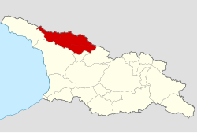

სვანეთი — საქართველოს ისტორიულ-გეოგრაფიული მხარე. იგი მოიცავს კავკასიონის ქედის სამხრეთ კალთებს და მდინარეების ენგურისა და ცხენისწყლის ზემოწელს. ისტორიულ სვანეთში შედიოდა აგრეთვე ე. წ. აფხაზეთის სვანეთი (მდინარე კოდორის ზედა ნაწილი), სამეგრელოს, ზემო რაჭისა და ლეჩხუმის მოსაზღვრე რეგიონები.

ადრინდელ საუკუნეებში სვანეთი კოლხეთის სამეფოს შემადგენელი ნაწილი იყო, შემდეგ ეგრისის სამეფოსი. XI-XV საუკუნეებში ერთიანი საქართველოს საერისთავო იყო. როდესაც საქართველო დაიშალა სამეფო-სამთავროებად, სვანეთიც რამდენიმე ნაწილად გაიყო: თავისუფალ, სადადეშქელიანო და სადადიანო სვანეთად.მჟამად სვანეთი ორ ნაწილად იყოფა, ზემო და ქვემო სვანეთად. მათ ჰყოფს მაღალი სვანეთის ქედი ლატფარის ზეკარით.